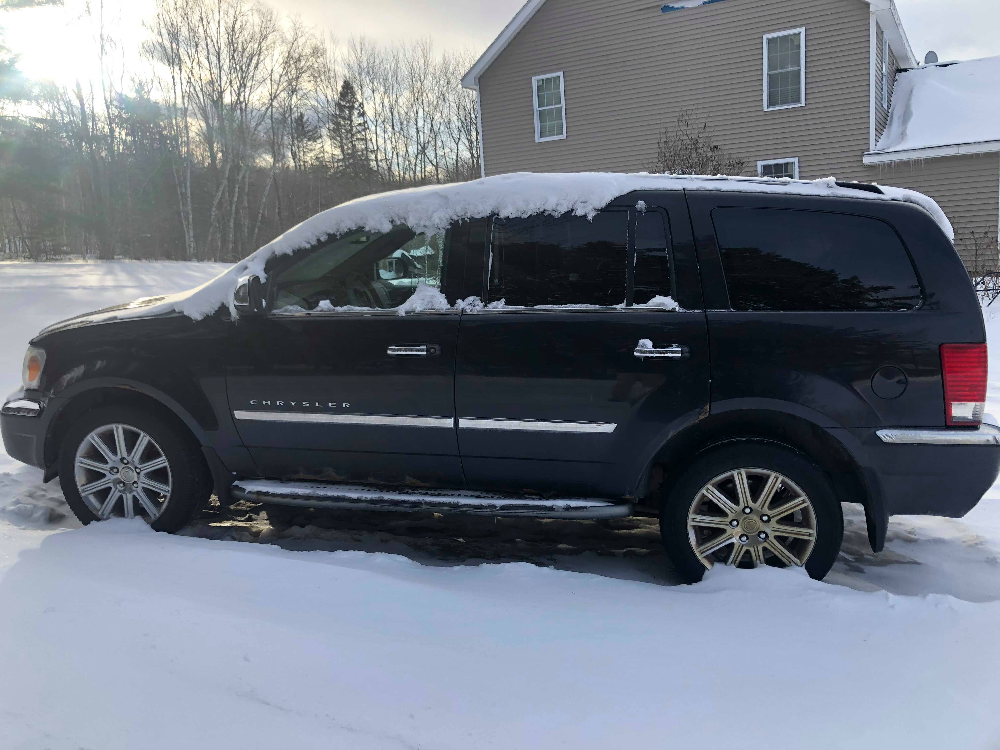
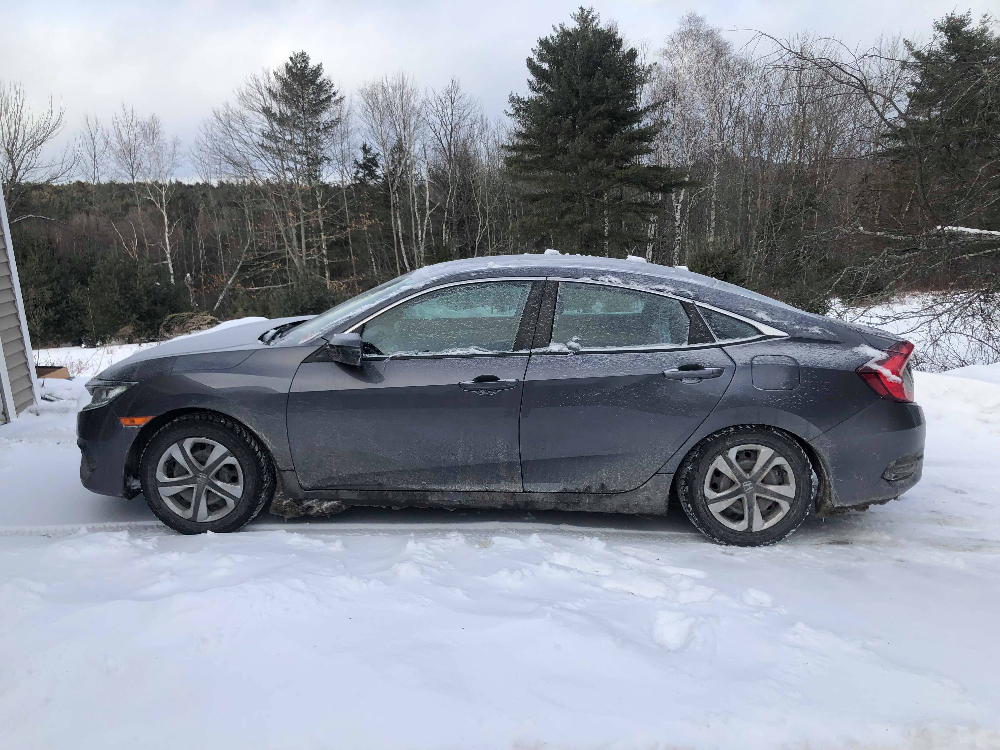

These are the other cars I've drove since I've had my liscense, (because this website needs a 4th page). Most of the driving I did with my permit was in my dad's '16 Honda Civic which he would let me drive/give me a ride to school every day sophomore year and I'd ride the bus home. I drove my moms '12 Dodge Charger by far the least of the three because me mom isn't the biggest fan of anyone driving her around, especially me. The Aspen which is in pretty rough shape I mostly used to collect bottles and donations for my Eagle Scout Project/Yard Sale. It's my mom's old vehicle and its in pretty rough shape but we keep it around for when the roads are too bad to drive my dad's Civic or we need to tow anything.
 